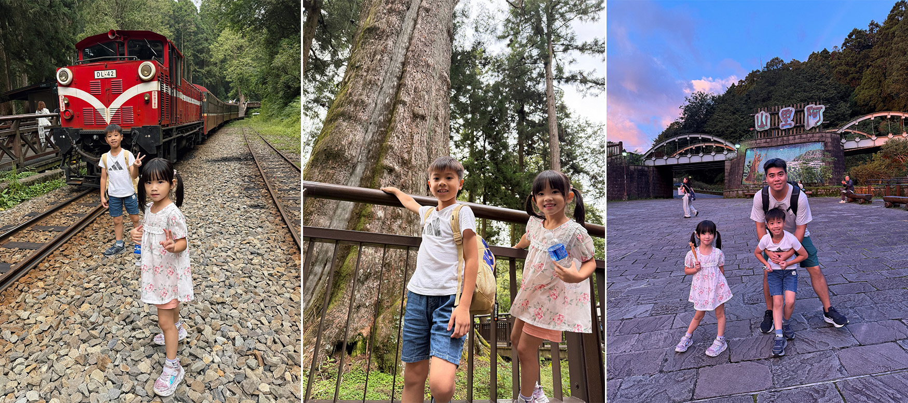
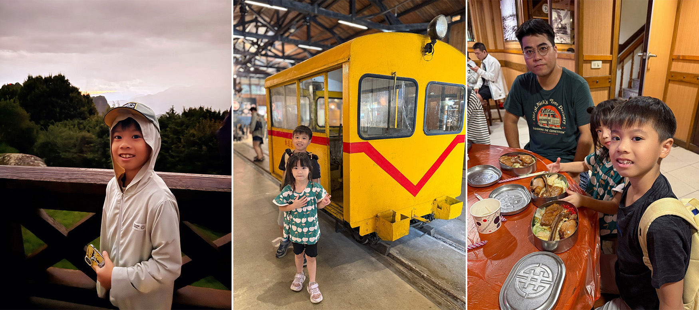
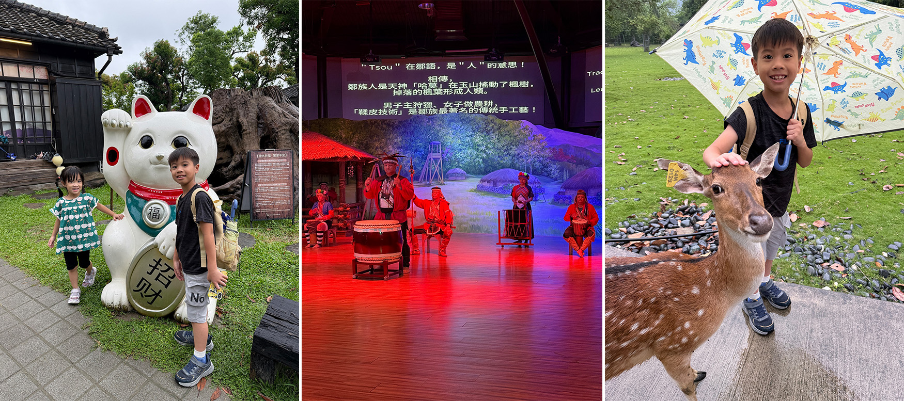
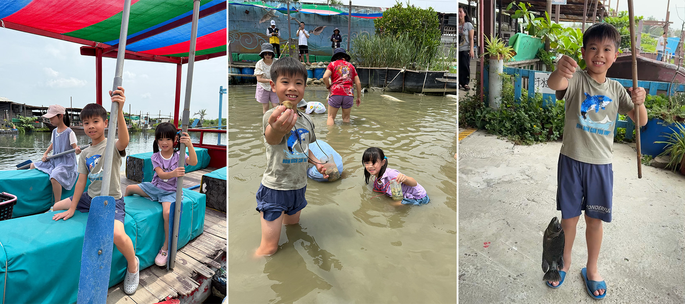

從小到大，阿里山森林小火車一直是台灣很經典的旅行記憶，紅色車廂穿梭在蜿蜒的山林鐵道間，沿途有高聳的森林、繚繞的雲霧，以及獨特的高山風景，總讓人充滿嚮往。一直很想帶兩個孩子到阿里山，搭乘充滿懷舊氣息的森林小火車，親眼看看沿途的山林美景。
這個放在心裡很久的小願望，終於在這次嘉義三天兩夜的小旅行中實現了！這趟旅程從阿里山的森林鐵道開始，一路玩到嘉義市區，再到親子最愛的休閒漁場，把嘉義山上與山下的特色景點都玩了一遍。三天兩夜的時間雖然不長，卻充滿了美景、美食與孩子們的歡笑，也為一家人留下了好多值得回味的畫面。
Day 1：阿里山森林遊樂區 → 神木線小火車 → 高山青大飯店
這次嘉義旅行最期待的第一站，就是阿里山森林遊樂區！阿里山小火車很有特色，紅色車廂搭配木質山林景色，帶著濃濃的復古氛圍。這次終於可以帶著兩個孩子親自搭乘，對孩子來說則是一次新鮮又有趣的鐵道體驗。
搭上神木線小火車，隨著火車緩緩啟動，沿途可以欣賞阿里山特有的森林景觀。火車穿梭在高聳的林木之間，窗外不時出現不同角度的山林風景，偶爾還能看到山谷與雲霧。沒有城市的喧鬧，只有火車行進的聲音，以及大自然特有的寧靜氣息，整個人的步調也不自覺地慢了下來。兩個孩子一路好奇地望著窗外，享受這趟特別的鐵道旅行。和一般火車不同，森林小火車的速度不快，反而多了一份悠閒，讓人有更多時間欣賞沿途風景。看著孩子開心搭車的模樣，也覺得這趟旅程真的來對了！
除了小火車，阿里山森林遊樂區最迷人的地方，就是那片讓人感到療癒的森林。踏進園區後，整個環境的氣氛和山下截然不同，高山上的空氣帶著涼意，四周被大片森林環繞，彷彿來到另一個世界。走在林間步道，抬頭就能看見高聳入天的神木與茂密的樹林，陽光透過枝葉灑落下來，形成一片片漂亮的光影。站在巨大而充滿歲月痕跡的老樹旁，才真正感受到大自然的壯闊與人類的渺小。
這也是帶孩子旅行很棒的地方，讓他們有機會親眼看看課本以外的世界，感受平常生活中不容易接觸到的自然景觀。走走停停、拍拍照片，享受森林裡的清新空氣與寧靜氛圍，沒有趕行程的壓力，反而多了一份難得的悠閒。
晚上入住阿里山高山青大飯店。高山上的晚上特別安靜，氣溫也比平地低很多。吃完晚餐後沒有再安排太多活動，早早回房休息，也順便為隔天凌晨的日出行程養足精神。
 |
Day 2｜祝山觀日出 → 小笠原山觀景台 → 奮起湖老街 → 檜意森活村 → 逐鹿部落 → 兆品酒店 → 嘉義文化夜市
凌晨起床，是這趟旅行最辛苦、卻也最特別的一段。為了欣賞阿里山日出，天還沒亮就起床準備出發，搭乘祝山線列車前往觀日出地點，展開另一段特別的森林鐵道體驗。凌晨的阿里山氣溫偏低，山上帶著濃濃的寒意，大家穿著外套，頂著還是一片漆黑的天色出門，孩子們雖然睡眼惺忪，但想到即將看到日出，還是努力打起精神。
抵達後前往小笠原山觀景台等待日出，天色尚未亮起，大家都帶著期待的心情，靜靜等待太陽從山巒間升起，可惜當天碰上下雨，天空被雲霧與雨水籠罩，最後還是沒能看到期待中的日出，雖然有一點小小的遺憾，但也成了孩子們一次特別的回憶，看完日出後便搭車返回，回到飯店稍作休息，再準備下山。
接著來到充滿懷舊氣息的奮起湖老街。奮起湖一直是阿里山旅遊相當熱門的景點，除了鐵道文化之外，最有名的當然就是奮起湖鐵路便當！來到這裡，當然不能錯過經典的鐵路便當，打開便當盒，熱騰騰的飯菜搭配豐富的配菜，簡單卻相當有味道，對孩子來說，這不只是一頓午餐，更是旅行中很有特色的一次美食體驗。吃飽後就在老街裡慢慢逛逛，還特地排隊買了有名的甜甜圈，也順道看看沿途的特色店家、挑選一些伴手禮。老街保留著山城特有的懷舊氣息，街道兩旁有各式各樣的小吃與商店，邊走邊吃、邊逛邊看，也讓這段行程多了幾分輕鬆自在。
 |
離開奮起湖後，我們回到嘉義市區，來到充滿日式風情的檜意森活村。這裡和剛才的山林景色完全不同，園區保留了許多日式木造老建築，從建築外觀到庭院造景，都散發著濃濃的日式懷舊氛圍。走在園區裡，可以感受到嘉義過去與林業發展之間的歷史連結。木造屋舍搭配綠意盎然的庭院，還有許多文創小店、特色商品與日式風格造景，每個角落都很有特色，也很適合拍照留念。在這裡不用特別安排什麼活動，只要沿著園區慢慢散步，看看老建築、逛逛小店，就能享受一段悠閒的午後時光。
接著來到孩子們相當期待的逐鹿部落，這一站除了能接觸原住民文化，也是很適合親子同遊的體驗景點。逐鹿部落有精彩的鄒族文化展演，透過表演、音樂與舞蹈，讓大家認識鄒族的傳統文化與生活特色，看著表演者穿著傳統服飾，搭配充滿力量的舞蹈與節奏感十足的音樂，現場氣氛相當熱鬧，也讓孩子有機會接觸平常比較少看到的原住民文化，為這趟旅行增添了不同的收穫。
除了文化展演，最讓孩子們興奮的就是梅花鹿餵食體驗！能夠近距離看到梅花鹿，甚至親手餵食，對孩子來說相當新鮮，一開始看到梅花鹿靠近，可能還有點緊張，但很快就被牠們可愛的模樣吸引，越餵越有興趣，忍不住想再多餵幾次，看著孩子們開心地和梅花鹿互動，也覺得這類結合文化、表演與動物體驗的景點，真的很適合安排在親子旅行中。
經過一整天豐富的行程，終於可以回飯店好好休息了！這晚入住嘉義兆品酒店，和前一天阿里山山上的清幽相比，回到市區後多了一份便利與熱鬧。稍微整理、休息一下後，晚上當然不能錯過嘉義文化夜市！來到嘉義，除了景點，美食也是旅行中不可或缺的一部分，文化夜市有各式各樣的小吃攤位，選擇相當豐富，一家人沿著夜市慢慢逛，看到喜歡的就買來嚐嚐，從小吃到飲料，享受熱鬧的夜市氣氛。對孩子來說，逛夜市就是旅行中最開心的事情之一，可以吃吃喝喝、走走看看。
 |
Day 3｜向禾休閒漁場 → 北上回程
第三天沒有安排太多趕路的行程，準備用比較輕鬆的步調，享受旅行的最後一天。
早餐後整理好行李，接著前往向禾休閒漁場，這裡是很適合親子同遊的休閒景點，結合漁場生態與各種體驗活動，不只是單純走走看看，還能讓孩子實際參與不同的活動，增加旅行的趣味性。來到漁場，最期待的就是各種水上與漁村體驗活動，像是划龍舟、撈蛤蜊及釣魚等。
孩子們第一次親自下水撈蛤蜊，光是看到水裡的蛤蜊就覺得很新奇，親手在水中尋找、撈起蛤蜊，更是玩得不亦樂乎。接著還體驗了釣魚活動，從準備工具、放下魚線，到耐心等待魚兒上鉤，每個過程都充滿期待。對孩子來說，光是等待魚兒上鉤的過程就已經很有趣，更不用說真的有收穫時的那份興奮感。
看著兩個孩子投入各種活動，大人也跟著放鬆不少，比起單純走景點、拍照片，能讓孩子親自動手參與、從遊戲中獲得樂趣，反而更能留下深刻的印象。結束向禾休閒漁場的行程後，也準備帶著滿滿的回憶，踏上北上回家的路程，為這趟嘉義三天兩夜之旅畫下句點。
 |
這次嘉義三天兩夜，從山上的森林、火車、日出，到山下的部落、梅花鹿與休閒漁場，三天的行程剛好體驗了嘉義不同的面貌，每一站都有不同的樂趣，也讓這趟旅行變得更加豐富。
最大的收穫就是終於完成了帶兩個孩子搭乘阿里山森林小火車的心願。親子旅行最棒的地方，就是能夠暫時離開平日忙碌的生活，陪著孩子一起探索、一起體驗，在旅途中看見他們開心的笑容，也一起創造屬於一家人的共同回憶。